Hoveniersbedrijf in Klarenbeek, bij Apeldoorn
Geeft groen vorm.
Wij leggen tuinen aan en houden ze bij, verzorgen bomen en onderhouden openbaar groen voor gemeente en provincie. Met eigen machines, eigen vakmensen en een eigen taxuskwekerij.
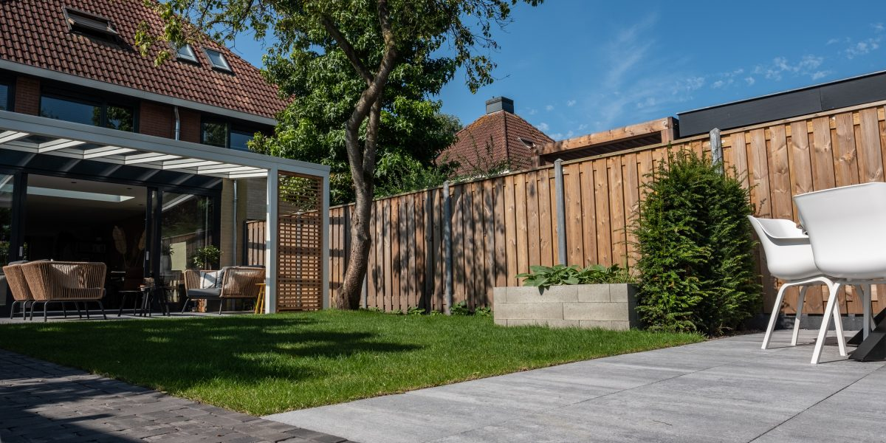
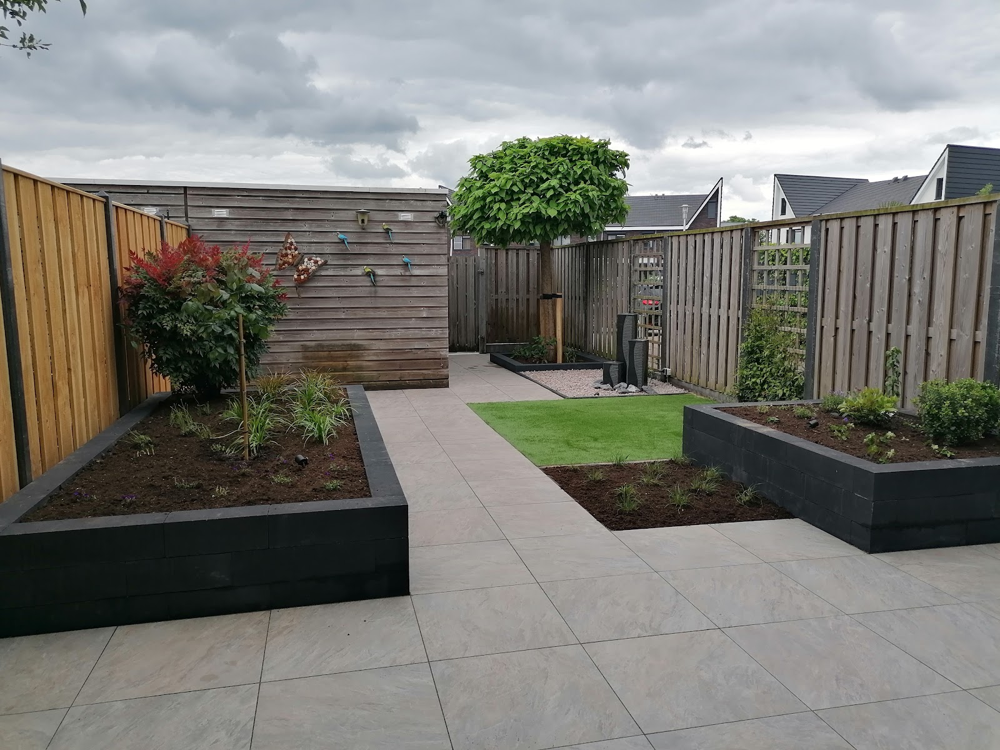
Voor particulieren
Uw tuin
Aanleg, onderhoud en bomen. Van kleine stadstuin tot grote landschappelijke tuin met zwemvijver.
Bekijk tuinen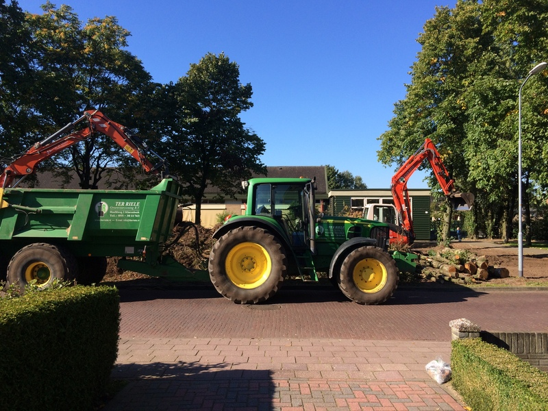
Voor gemeente, provincie en bedrijven
Openbaar groen
Groenvoorziening, maaien, machinaal snoeien, onkruidbeheersing, grondverzet en kleine civiele werken.
Bekijk machineparkVan moddertuin tot buitenkamer
Wij ontwerpen en leggen tuinen aan, en houden ze daarna bij. Bestrating, borders, gazon, schutting, verlichting: alles in eigen beheer. Creatief waar het kan, snel en flexibel waar het moet.
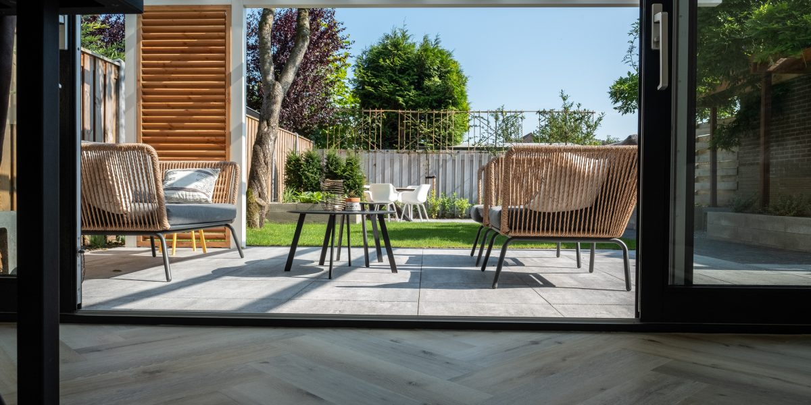
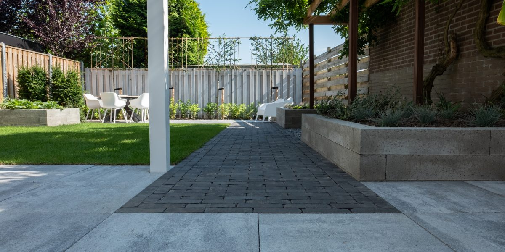
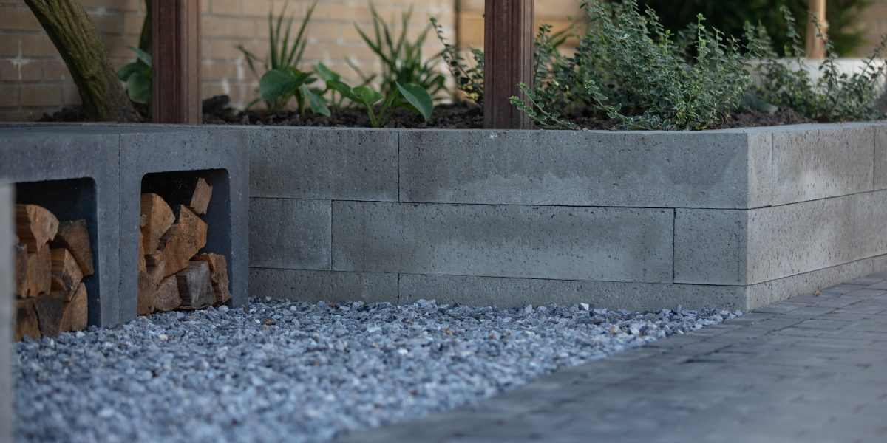
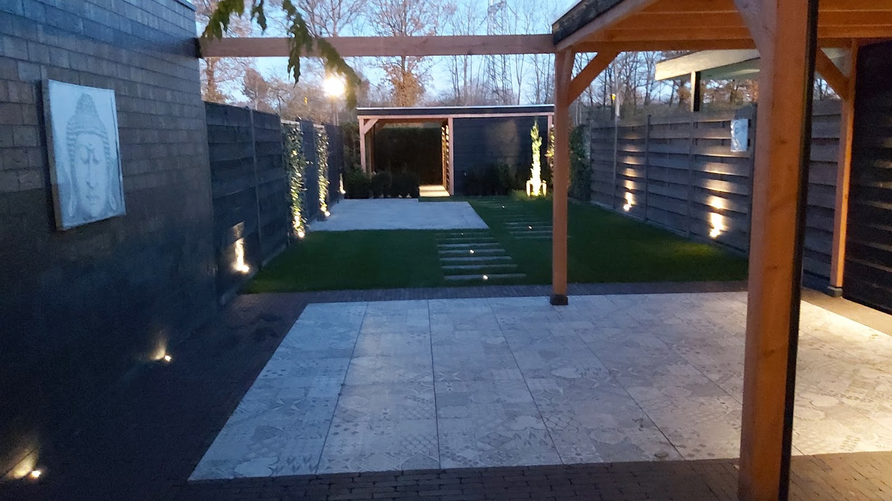
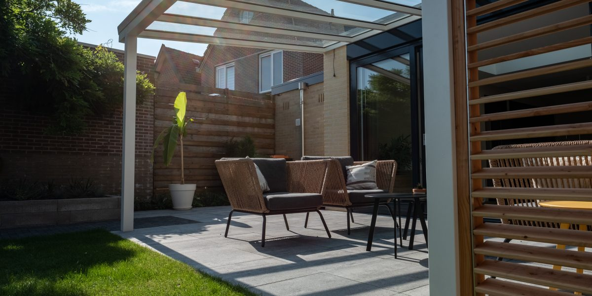
"Heel knap en fijn hoe de mannen van Ter Riele in 3 weken tijd onze moddertuin hebben veranderd in een mooie aangelegde sfeervolle tuin. Altijd optijd, altijd vrolijk, meedenkend, kundig, snel en netjes, Wij zijn dik tevreden!"
Boomverzorging
Snoeien, kappen of een boom die gevaar begint op te leveren veilig weghalen. Onze boomverzorgers klimmen zelf de boom in en zijn opgeleid voor het werk met kraan en versnipperaar. Wat eraf komt, ruimen we direct op.
"Hoveniersbedrijf Ter Riele heeft bij ons tot grote tevredenheid een enorme boom weggehaald die gevaar voor de omgeving begon op te leveren. Zij werken veilig, netjes en ruimden meteen alles op. Snel en deskundig."
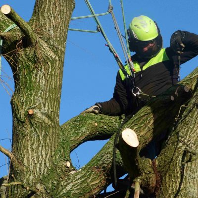
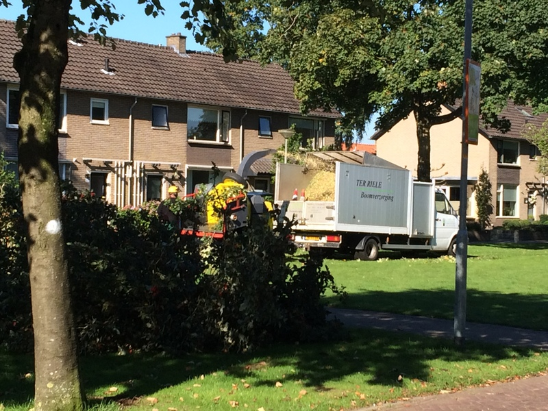
Voor gemeente, provincie en bedrijven
Alles in eigen beheer
Ons machinepark is zo ingericht dat we vrijwel al ons werk zelf uitvoeren: kranen, houtversnipperaars, machines voor gras en gazon, onkruidbestrijding op verharding en onderhoud van beplanting. De medewerkers hebben de vakopleiding om ermee te werken.
- Grondverzet
- Maaiwerkzaamheden
- Machinaal snoeien
- Onkruidbeheersing
- Tuin en park
- Kleine civiele werken
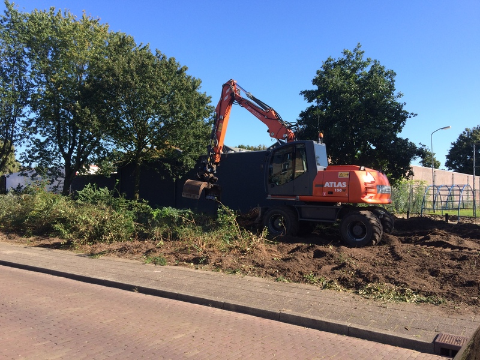
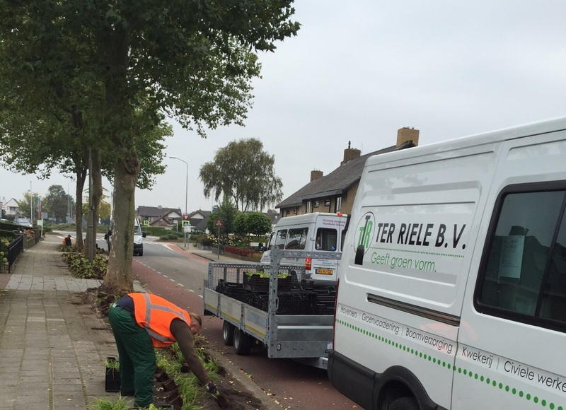
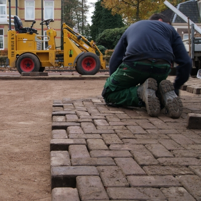
Duurzaam en veilig werken
Duurzaamheid weegt voor ons mee, voor mens en milieu. We investeren in zuinigere machines om de CO2-uitstoot te verlagen. Dat is vastgelegd in onze certificering: de CO2-prestatieladder niveau 5, ISO 9001 en VCA.
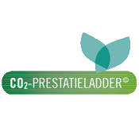
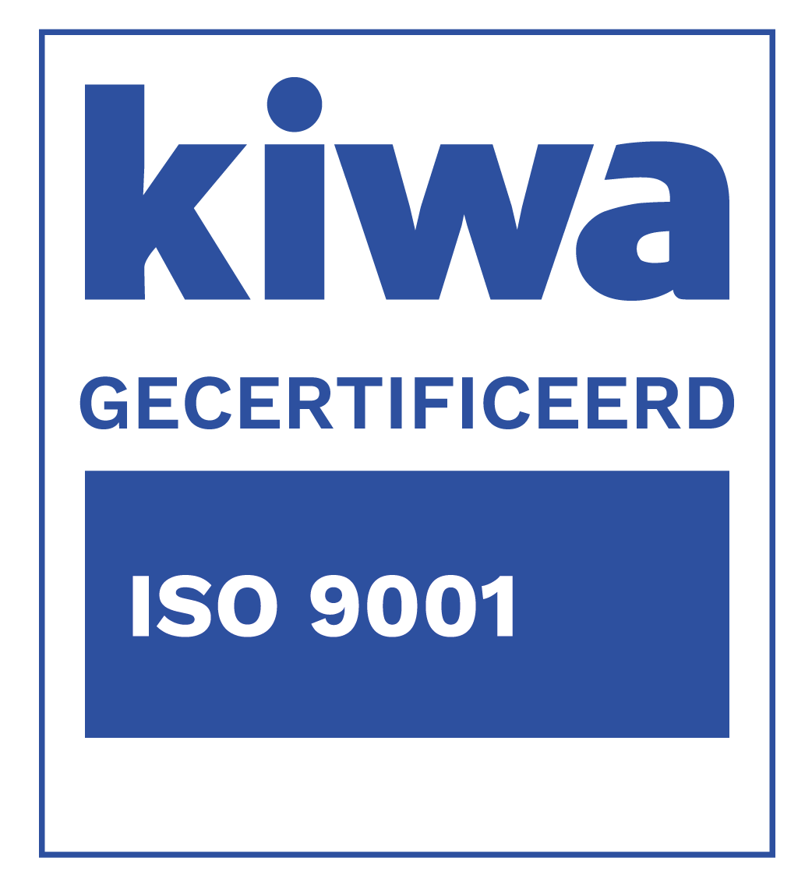
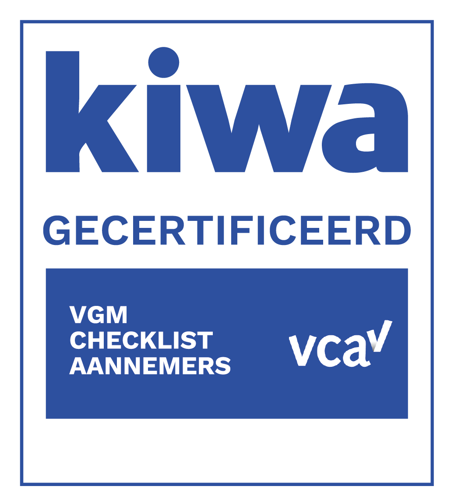
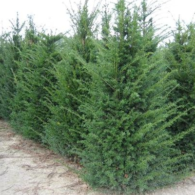
Eigen taxuskwekerij in Klarenbeek
Aan de Hoofdweg in Klarenbeek hebben we ons kantoor, de loods, het machinepark en onze eigen taxuskwekerij. De combinatie van creatieve tuinaanleg en groenvoorziening maakt ons bedrijf anders dan de meeste hoveniers. Of het nu om creativiteit, snelheid of flexibiliteit gaat: het beste voor de klant staat voorop.
"Na anderhalve week een mooie tuin ze hebben mooi werk afgeleverd wij zijn er heel erg blij mee"
Gemiddeld 4,1 sterren uit 51 Google-reviews.
Even overleggen?
Bel ons voor een afspraak, of stuur een bericht met wat foto's van uw tuin of terrein.
055 301 17 43 info@tterriele.nl- Adres
- Hoofdweg 2
7382 BH Klarenbeek - Openingstijden
- Maandag tot en met vrijdag
07:00 tot 18:00
Weekend gesloten